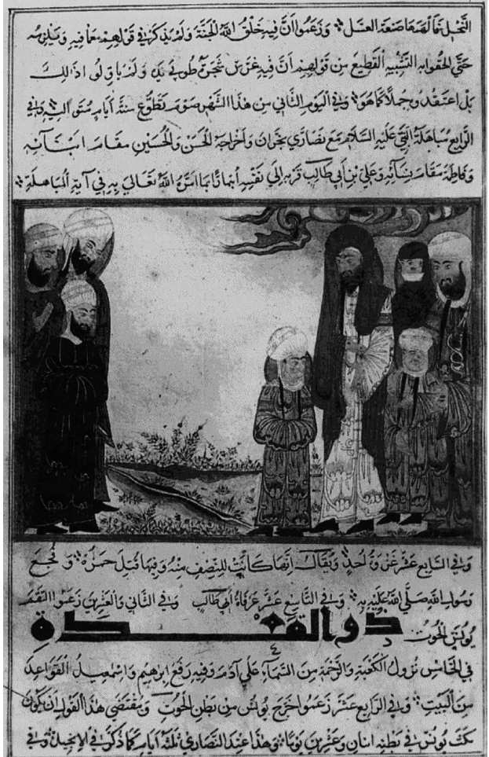

中世纪不仅以横贯欧亚大陆的前所未有的商品和技术交流为特征，而且还以宗教信仰的空前传播为特征。就基督教和佛教而言，它们于古典时期末开始传播，中世纪时期继续流传（见第四章第三节）。但是，中世纪诸世纪中，最重要的宗教变革是伊斯兰教的出现。除其教义（这将于下章叙述）外，这一新宗教在公元632年穆罕默德死后，突然从阿拉伯半岛向外广泛传播，对欧亚大陆和非洲广大地区产生了深远的影响。
伊斯兰教的传播（详情以后叙述）分为两个阶段：第一阶段，从632年至750年，伊斯兰教首先传遍中东地区，然后向西传到比利牛斯山脉，向东传到中亚地区；最终结果，实际上是把地中海变成了穆斯林的一个湖。第二阶段，从1000年至1500年，在这几个世纪中，伊斯兰教进一步传播，传入印度、东南亚和非洲，使印度洋也变成了穆斯林的一个保护区。
伊斯兰教领土的巨大扩张，自然使基督教世界的统治者们感到惊恐；他们这时实际上已被孤立在欧亚大陆的西端。这一点，也是13世纪蒙古人崛起时基督教世界统治者们的反应颇为矛盾的原因。蒙古骑兵所予以的屠杀使他们丧魂落魄。但是，正如西方人所看到的那样，情况并非一片漆黑，因为蒙古人也征服了波斯和美索不达米亚的穆斯林。因此，基督教世界的统治者们希望自己能使异教的蒙古人也像以前异教的马扎尔人和维京人那样皈依基督教。

图75 15世纪阿拉伯人的手稿，收藏在巴黎国立图书馆，画的是穆罕默德和他的女儿法蒂玛。
教皇派出了两个传教团，前往设在蒙古北部哈拉和林的大汗朝廷。传教士们试图说服可汗信仰基督教，参加教皇对伊斯兰世界的十字军东征。但是，由于传统的巫师或萨满教僧在朝廷中很有势力，传教团没能使可汗皈依基督教。不过，他们成功地收集到了关于蒙古习俗和军事策略的第一手可靠情报。他们还了解到，从哈拉和林往东走20天，就会到达神秘的中国领土。欧洲人知道中国不仅很富裕，而且不信奉伊斯兰教，因而有可能成为反对穆斯林的同盟国。
由于中国是大蒙古帝国的一部分，1264年忽必烈从哈拉和林迁都中都，即今天的北京。最早来到首都的欧洲人是前面提到的两位威尼斯商人：尼科拉·波罗和马费奥·波罗。忽必烈对他们的到来表示热烈欢迎，向他们询问了有关欧洲的情况，并让他们转信给教皇。在这些信中，忽必烈请求，为他的朝廷派100名传教士，向他的人民传教，并同其他宗教代表辩论。
如果说忽必烈提出这一要求是由于他对基督教的热情，那是颇可怀疑的。更有可能的是，他要为自己的官僚机构收罗人才，因为他刚刚征服中国，不敢冒险在上层机构中起用太多的中国人。实际上他确实雇用了大批外国人任职。为了维护他的权力，他很注意保持各部分人之间的势力平衡。